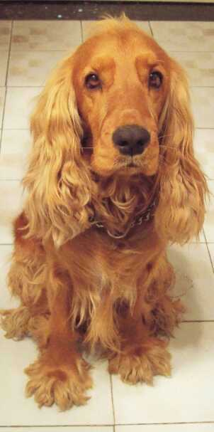
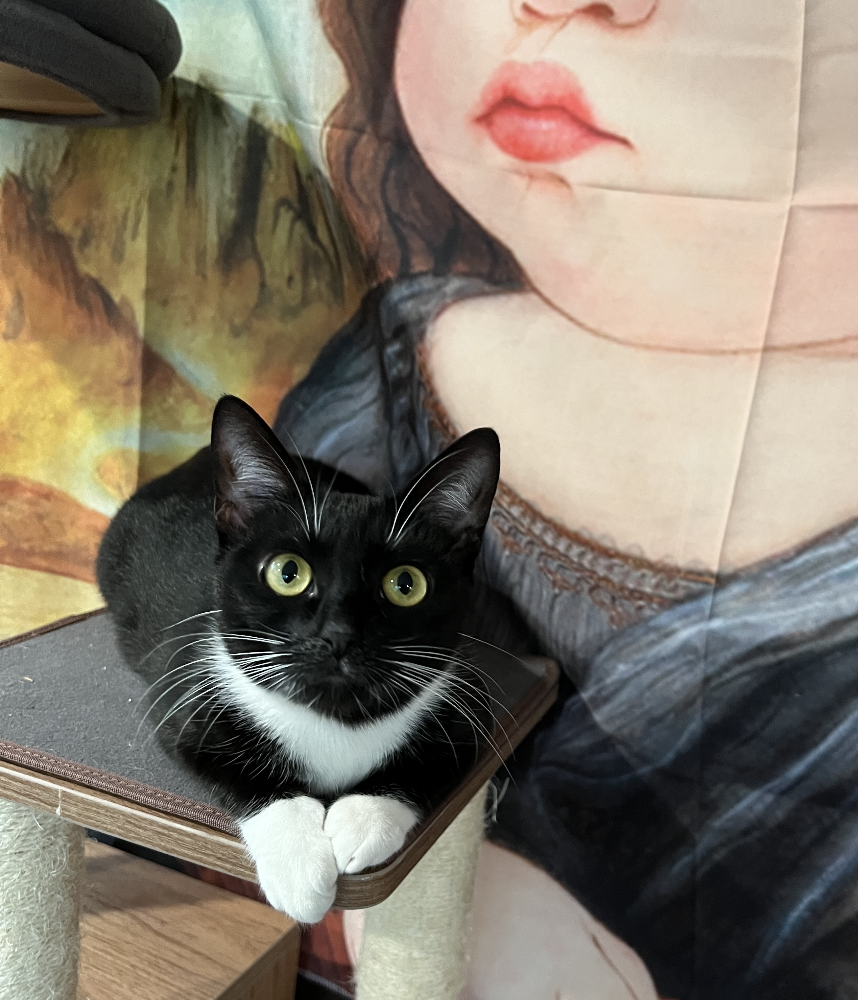

I enjoy a variety of outdoor activities including running, cycling, hiking, and camping. I've participated in numerous running events such as the Color Run, Sunlight Run, and Bubble Run. Though I've only been fishing and snowboarding a few times, I find them enjoyable as well.
Indoors, I love playing board games with friends and have amassed a collection that represents 90% of the current market. I also collect LEGO sets; while this hobby can be expensive, I own over 20 large sets along with many smaller figures. Additionally, I enjoy collecting and playing video games on the Switch, even though finding time and friends to play with can be challenging.
I'm both a cat and dog person. I grew up with a Cocker Spaniel and currently have a cow-patterned cat named Pi-dan.
 Beyond these activities, I have a passion for comedy movies and enjoy indulging in culinary delights such as hotpot and barbecue.